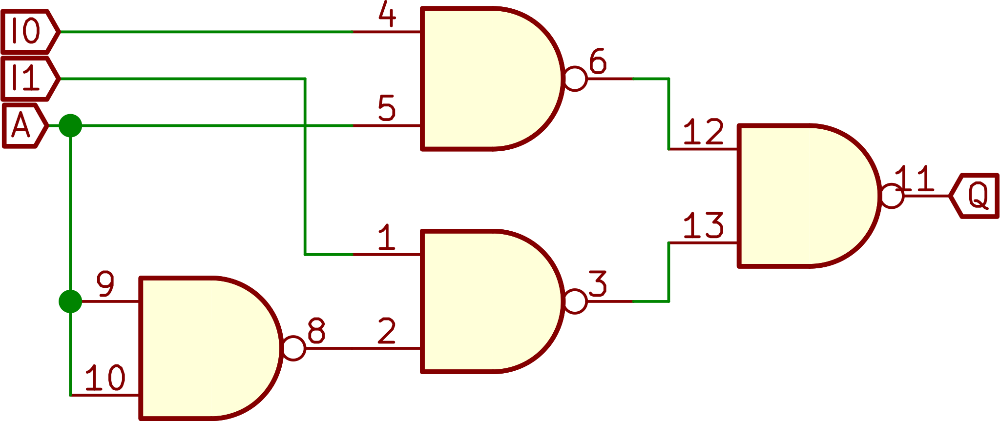
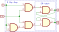

Minimum RISC-V System From Scratch¶
So, we’ll make a RISC-V system! It may sound “mission impossible” to build this kind of thing from scratch in a relatively short time, without prior background in hardware designs. But it really isn’t as magical as it seems. I hope this tutorial could serve as a tiny but inspiring guide to those programmers who know little about hardware like I did to have a better understanding of how a computer system works from the ground up, and for those who know a bit about different pieces of the story but can’t put them together.
Nothing is better than having a playable example that is both small and functional. This repo already contains a RISC-V processor core implementation that is synthesizable by itself, but also directly works with a minimal emulator (Verilator-based) code with a realistic system setup. The processor implements RV32I instruction set with major part of CSR Mode-M, while the emulator emulates the cache/memory, serial console output, video output and keyboard input. The applications are built with standard gcc/Rust RISC-V toolchains and directly run on the processor.
The whole repo is simply divided into three parts:
Processor core implementation in Verilog:
core.sv(1.2K loc) andcsr.sv(182 loc).System emulator:
sim.cpp(423 loc).Example applications that directly runs on
sim:apps/*.candapps/mriscv-rs/examples/*.rs.
This tutorial is organized in two parts: the implementation of the processor core with Verilog and the building of the final system/applications.
Make a RISC-V processor¶
What Makes a Processor?¶
A processor, like the name suggests, processes data via computation. More specifically, the prevailing modern computer processors adopt a computation model that is largely inspired by Turing Machine (as opposed to Lambda Calculus, which gave birth to functional programming languages). A typical processor has three main functions for its operation:
The ability of taking input data from the containing system and putting results back to it. (I/O)
The ability of processing the data, such as doing arithmetic or logical operations. (Computation)
The ability of maintaining an internal state, which could affect its behavior during processing. (State and Control)
Without any one of them, the construct sounds less “exciting”: without I/O, a processor makes no difference from a dummy blackbox that does nothing inside; without computation, the processor can only output data as-is; without being stateful, a processor is a simple calculator whose outputs are immediately determined by its inputs (which could be implemented solely by combinational logic circuits, which will be discussed soon) and the system won’t be stateful to control other things. Many mechanical systems are stateful, such as your wrist watch, which keeps track of the current time as the state and changes it as time ticks. In fact, a mechanical watch/clock is a computer/processor as it takes inputs (you can adjust the time and set the alarm), generates outputs (you can always check the time from the display), process the data (basic arithmetic to maintain the current time) and has state and control (triggers second/minute/hour hands according to its internal state) – it is just not a general-purpose computer. However, interesting mechanical computers do exist in history [link here].
Although the industry has been evolving its technology in the past decades, the
basic logic for a processor hasn’t been much different from its
theoretical model: like a Turning machine takes commands from a tape that
instructs its next operation, a CPU fetches the next instruction from a
(logically or physically) continuous portion of memory (or from the cache). It
also changes its internal state by the instruction like the Turning machine can
modify its state register. However, when it comes to details, the processor
architectures may differ in how they manage/layout their internal/external
states or how they interpret the instructions. Here we choose RISC-V as our target Instruction Set Architecture
(ISA) for our processor build. RISC-V is register-based, meaning all
temporary values are kept by registers in a register file, like lockers in a
locker room, individually indexed by names (x0-x31 in RV32). They’re directly
accessible, unlike stack-based alternatives which usually have to push to/pop from
a stack of values by their operations.
It is also a register-to-register (aka. load/store) architecture, where all
operations are done on the basis of registers, so that values have to be loaded
from the memory to registers before a computation and stored back to the
memory explicitly from registers afterwards, unlike many CISC architectures such as x86
which supports mixed use of values both from memory and registers (a register-memory
architecture).
With these basics in mind, obviously, we need to have different parts of the processor to take care of the three major functions. There should be a way to decode the instruction into some form of internal, temporary representation of its functionality, so as to control how the rest part of computation should be carried out. There should be some logic for doing the actual calculation, some organized internal “lockers” to hold the values and some logic to read/write the results from/to the main memory. Finally, there should be a loop-like logic to drive the entire composition of different parts, so the processor can move onto the next instruction and keep executing instructions one after another with full automation, like a machine gun.
Register Transfer Level Abstraction¶
It is not very hard to notice such a powerful construct could be implemented by repeatedly applying two kinds of “logic”:
the logic that is like a math expression, which calculates an “immediate” output (response) from the given input (signal) by pure, stateless logic operation,
the logic that “remembers” something, controlled by some external signal, which could be later altered or read out. (Like a “sequencer/synthesizer”, if you’re familiar with electronic music.)
In short, one gives us some math calculation, called combinational logic, while the other one introduces the notion of states, called sequential logic.
Indeed, in digital circuit design, there is a widely used abstraction that is based on this observation. Register Transfer Level (RTL) is used by languages like Verilog/SystemVerilog and VHDL to create a high-level schematics of logic circuits. It describes the logical behavior with these two kinds of logic as primitives, without having to dive too much into their low-level (gate-level) implementation. Each kind of logic usually has patterns and disciplines for its implementation and can be either automatically synthesized by specialized tools or hand-crafted if necessary (or both), while the RTL language can abstract this away so the design task can be divided into high-level logic design and low-level implementation (e.g. the use of basic gates and wiring/routing).
Combinational logic is usually implemented directly with the wiring of a cascade of basic logic gates (e.g. NAND/NOR gates). For a concrete example, a 2-input multiplexer (or simply “mux”) can be implemented as in the diagram:
{kind=link}
Each component is a NAND gate where the output is the negation of a logical “and” of two inputs. With the shown wiring of four gates, the mux choses between inputs (I0 vs. I1) for the output switched by the control signal A. The value of I0 will be chosen (Q = I0) iff. A = 1.
As a comparison, in SystemVerilog (a popular RTL language), the mux can be implemented as:
// 2-input mux
module mux2(input i0, input i1, input a, output q);
// Combinational logic is a direct assignment to
// the wire from an expression.
// Since it is time-independent, the order of
// assignments does not matter (unlike many
// programming languages).
assign q = a ? i0 : i1;
endmodule
There is one thing that’s worth noting: the “calculation” here happens almost instantaneously as the underlying logic gates “maintain” their outputs from their inputs by physics (the use of semi-conductors). There is, however, still some time delay due to physical properties of the gates and the time for electrons to propagate on the wire or within the semi-conductors, at the scale of nano-seconds. Thus, the delay is largely affected by the depth gates wiring and complexity of the overall construction.
Sequential logic, however, is very different. Here we only discuss about synchronous sequential logic. As the main building block for such a logic, a flip-flop not only takes input as in combinational logic, but also requires a clock signal that drives it. In sequential logic, outputs are only stabilized and deemed as valid when the clock signal pulses (“rising edge”, going to 0 to 1; or “falling edge”, 1 to 0). The use of an additional clock signal effectively introduces the notion of time into the logic (unlike combinational logic, which is time-independent). The notion of discrete time also makes the changing state easy to reason about and manipulate. Interestingly, such seemingly “magical” building blocks can be still implemented by pure wiring of gates, to be stateful. The extra clock signal (or “reset signal”, for “latches”, its asynchronous counterpart) is the key ingredient that does the trick. The below diagram shows a wiring scheme for “D-type” flip-flop with NAND gates, which is a commonly used component in synthesizing sequential logic. In this flip-flop, the output (Q) will retain the “memorized” value, when the clock signal (Clk) is 0, and change to the input (D) when the clock is 1.
{kind=link}
Sequential logic in SystemVerilog below may be synthesized/hand-crafted by a D-type flip flop.
module flip_flop(input d, input clk, output reg q);
// Sequential logic has notion of time.
// It can only be specified with in an `always*` block.
always_ff @ (posedge clk) begin
// Change the output only at
// the positive clock edge (clk = 1).
q <= d;
end
endmodule
Finally, consider the scenario where we combine both kinds of logic together: we wire the input of a combinational logic from the output of a D-type flip-flop, and then wire the combinational output to the flip-flop input. It creates a “loop” which takes the output from the current state and puts the new value to the next state after calculation, implementing an iterator whose iterations are driven by the clock signal.
module counter(input d, input rst, input clk, output reg q);
// A counter, whose value could be set to `d` when
// `rst` = 1 on the positive edge of `clk`, or increased
// by 1 when `rst` = 0 and clocked.
// combinational logic, a 2-input mux.
wire comb_result = rst ? d : (q + 1);
// sequential logic, to alter the state ("reg" for the
// register, wired to `q`)
always_ff @ (posedge clk) begin
q <= comb_result;
end
endmodule
Of course, the period of the clock signal (more precisely, the minimum gap between two clock cycles) should be conservatively chosen to be larger than the circuit time of the combinational logic, so the input to the flip-flop is stabilized before the next clock ticks. This also reveals why processors nowadays are “pipelined”, the topic of the next section.
Instruction Pipelining¶
There are many possible schemes for a processor design. The simplest idea is to utilze the “loop” we just talked about to mainly divide the processor into two parts:
Computation: this part can be built with a cascade of combinational logics that “generates” the result from the wire, as signals go through a series of gates. More specifically, it first decodes the instruction into data and control signals. Then it immediately wires the data into an Arithmetic Logic Unit (ALU). An ALU is built by a mux which selects the kind of calculation the instruction needs to perform, given the control signal. It may also use the operands from the register files, which is the current state of the underlying flip-flops. Overall, the next state for the processor is prepared in this giant fabric of purely combinational logic.
State Transition: the results from the computation logic are ephemeral, like the other end of an eletric wire. We thus would like a sequential logic that finally updates the processor’s state before the clock cycle ends. Usually such sequential logic is done together with the register file, which writes back the outcome of the execution to its flip-flops. The changed values will become available again at the beginning of the next cycle, when used again by the combinational logic by the computation.
The scheme is usually called a single cycle processor. The main advantage of choosing this scheme is that it is fairly easy to implement with limited number of gates and low complexity. It has many downsides, so few modern processors still use it. A major one is the processing throughput (e.g. instruction per sercond) equals to the clock frequency as the processor can exactly handle only one instruction per cycle. Whereas the choice for the clock cycle time is not arbitrary: like we previously said, the longest circuitry in the combinational logic for computation sets the lower-bound for the cycle time, which is not scalable for implementing a modern, realistic CPU, due to the complicated specification of the ISA. Even worse, the cache/memory access time during the computation can drag the cycle time even further, resulting in a low average frequency for the processor.
Nowadays, you would probably see builds of single-cycle processors in some hobby CPU projects (e.g. built with discrete components like DIP-packaged TTL logic ICs) and in “Turning-complete” games such as Minecraft/Factorio, where people wish to have managable amount of work to build a cool proof-of-concept computer.
Therefore, researchers and engineers have come up with numerous ways to get around this limitation and largely improved the throughput by instruction-level parallelism. One of the greatest technique that is seen on almost every chips nowadays is instruction pipelining. The high-level idea though, is simple and intuitive: we can divide the flow of that “giant” computation logic into several stages and try to process each instruction as in a car factory with an assembly pipeline. Each stage has its own sequential logic, so the clock cycle time only needs to accommodate the longest stage in the pipeline, instead of the entire pipeline. Therefore, for a given number of stages, the ideal case is we wisely divide the task so that all stages have similar amount of time for their combinational logic (similar depth). This technique is much more scalable than the single-cycle design, as the designer can choose to use more stages in the pipeline to account for more complex logic required for the target ISA. For example, an Intel Skylake CPU (whose ISA is x86-64) has around 14 stages whereas an ARM Cortex-A77 (whose ISA is ARM64) has 13.
In this mriscv project, we use a classic 5-stage pipeline design that divides
the computation into the following stages:
instruction fetch (IF)
instruction decode (ID)
execution (EX)
memory access (MEM)
register file write back (WB)
which was once a typical arrangement for a RISC processor (e.g. MIPS). There is only one memory access stage in the pipeline thanks to the simplicity of load/store nature of RISC: there is no instruction that needs to both access (load/store) memory and do other computation at the same time, which greately simplifies the pipeline. Overall, each instruction will do one kind of the operations listed below:
math computation with registers, and write back the result to a register;
memory access: load from/store to memory, based on the address provided by registers and the data destination/source is also a register;
control flow: conditionally/unconditionally change the current Program Counter (PC, pointing to the instruction being executed) to other location.
Unlike many other projects, mriscv adopts a clean and modular kind of
organization in its one-file core code (core.sv). The five stages are
implemented in their own modules (fetcher, decoder, executor,
memory and writeback) and put together in core module. This
manifests the data path and control lines that each stage offers and requires.
You can also try to tweak/modify the code of one specific stage for your own
purpose.
Decoder: Parsing an Instruction¶
If you’re familiar with shell/scripting languages like Bash, Python or Javascript, you must have heard of the term “interpreter”. Likewise, a processor is “merely” a hardware-built interpreter that efficiently supports a handful of commands (instructions) by following their syntax (binary format) and semantics (behavior) specified by the ISA. As the name suggests, an interpreter first needs to “understand” what an instruction is all about, by parsing, or in the term of digital circuits, decoding the given instruction.
Luckily, thanks to the elegant design of RISC-V ISA, the format of instructions
in RV32I is very regular. It tends to use the same structure for similar
instructions and put operands to the same bit portion of the 32-bit word for
most of the instructions. Furthermore, it uses a somewhat hierarchical
approach: with “function” code (funct3, funct7, etc.), variants of the
same base operation can be treated in the same way for some cases and
differently for their own semantics. Sometimes function code is
deliberately not continuous to allow testing some bit of the code to efficiently
tell the special treatment.
In our decoder code, we rename the group of wires according to the bit
fields in a instruction.
wire [6:0] opcode = inst[6:0];
wire [2:0] funct3 = inst[14:12];
wire [11:0] funct12 = inst[31:20];
wire [4:0] rs1 = inst[19:15];
wire [4:0] rs2 = inst[24:20];
wire [4:0] rd = inst[11:7];
wire [31:0] ui = {inst[31:12], 12'b0}; //< load upper immediate
wire [31:0] xxxi = {{20{inst[31]}}, inst[31:20]}; //< sign-extended immediate
wire [20:0] jal_offset = {inst[31], inst[19:12], inst[20], inst[30:21], 1'b0};
wire [11:0] jalr_offset = inst[31:20];
wire [12:0] b_offset = {inst[31], inst[7], inst[30:25], inst[11:8], 1'b0};
wire [11:0] l_offset = inst[31:20];
wire [11:0] s_offset = {inst[31:25], inst[11:7]};
// ... (see core.sv for the complete content)
RISC-V instructions usually uses two operand registers (rs1, rs2) and
one destination register (rd). One of the main task the decoder has to do
here is to store the current values of operands to an stage-end register by the
end of the cycle:
wire [31:0] op1 = (ctrl_forward_valid_exec && rs1 == ctrl_forward_rd_exec) ? forward_data_exec:
(ctrl_forward_valid_mem && rs1 == ctrl_forward_rd_mem) ? forward_data_mem:
reg_rdata1;
wire [31:0] op2 = (ctrl_forward_valid_exec && rs2 == ctrl_forward_rd_exec) ? forward_data_exec:
(ctrl_forward_valid_mem && rs2 == ctrl_forward_rd_mem) ? forward_data_mem:
reg_rdata2;
The combinational logic for op1 seems a bit more complex than imagined, due to the need for forwarding
that we’ll later get to. For now, let’s ignore these wires/registers with “forward” in their names, so
the actual logic here is:
wire [31:0] op1 = reg_rdata1;
wire [31:0] op2 = reg_rdata2;
Here, reg_rdata1 and reg_rdata2 are the output signals from the
register file (pins from a register_file module instance) that keeps
flip-flops for all 32 standard RV32I registers. As part of the combinational
logic, the “addresses” (0-31) of the registers we’d like to access are wired to
rs1 and rs2:
// wire to read from register file
assign reg_raddr1 = rs1;
assign reg_raddr2 = rs2;
The register file is implemented in its own SystemVerilog module, whose interface is:
module register_file(
input [4:0] raddr1,
input [4:0] raddr2,
output [31:0] rdata1,
output [31:0] rdata2,
input [4:0] waddr,
input [31:0] wdata,
input wen, //< write enable
input ctrl_clk //< clock
);
In the core module, decoder’s pin reg_raddr1 is wired to raddr1 and
reg_rdata1 is wired to rdata1. The same is for the other operand.
Another important thing the decoder needs to do, according to the design in this project, is to calculate whether there is transfer of the control flow:
// set jump signal for control transfer instructions
assign ctrl_pc_jump_target =
opcode == `JAL ? pc + $signed({{11{jal_offset[20]}}, jal_offset}) :
opcode == `JALR ? op1 + $signed({{20{jalr_offset[11]}}, jalr_offset}) :
opcode == `BXX ? pc + $signed({{19{b_offset[12]}}, b_offset}) : 'bx;
assign ctrl_jump = (!ctrl_skip_next_reg) &&
(opcode == `JAL ? 1 :
opcode == `JALR ? 1 :
opcode == `BXX ?
(funct3[2:1] == 0 ? ((op1 == op2) ^ (funct3[0])) : // BEQ & BNE
(funct3[1] == 0 ?
(($signed(op1) < $signed(op2)) ^ (funct3[0])) : // BLT & BGE
((op1 < op2) ^ (funct3[0])))) : // BLTU & BGEU
0);
The shown combinational logics implements the control signal that determines
whether the processor should move its program counter to a different location
other than the next instruction (PC + 4). ctrl_jump signals 1 if the
processor needs to “jump” to other places, which could be caused by branching
(e.g. BNE), or function calls (e.g. JAL). These control signals will
connect to the logic that fetches the instruction and advances the PC. We’ll
revisit this part later.
Finally, at the end of each cycle, the decoder should already prepare the
decoded information of the instruction, which is stored in SystemVerilog
registers (logic is the same as reg in this context, essentially flip-flops) so they can be used as the inputs in the next cycle of
the subsequent stage:
// ...
output logic [31:0] op1_reg, // op1 for ALU
output logic [31:0] op2_reg, // op2 for ALU
output logic [4:0] rd_reg, // destination general register for writeback
// ...
output logic [31:0] tmp_reg, // keeps some additional value that skips ALU
output logic [31:0] pc_reg, // pass on the instruction address
// ...
output logic [2:0] ctrl_alu_func_reg, // ALU function selection
output logic ctrl_alu_sign_ext_reg, // ALU sign extension flag
output logic ctrl_nop_reg, // if the current instruction should be treated as a no-op
output logic ctrl_wb_reg, // if the instruction needs to write back to a register (use rd_reg in WB stage)
// ...
output logic [4:0] ctrl_mem_reg, // if the instruction needs to access memory (MEM stage)
output [31:0] ctrl_pc_jump_target, // PC target (only valid if ctrl_jump = 1)
output ctrl_jump, // if there is a (non-trap) control flow transfer
// ...
// (see core.sv for the complete implementation)
// (here we just show one logic path that could prepare the value
// for `op1_reg`)
`XXXI: begin
op1_reg <= op1;
op2_reg <= xxxi;
exc_reg <= exc;
ctrl_alu_func_reg <= funct3;
ctrl_alu_sign_ext_reg <= (funct3 == `FSRX) && inst[30];
ctrl_wb_reg <= 1;
ctrl_wb_csr_reg <= 0;
ctrl_mem_reg <= 0;
end
// ...
Executor: All About “Computing”¶
The executor mostly consists of an ALU (and a multiplier/divider if RISC-V “M”
extension needs to be supported). As a simple implementation, here we just use
a multi-way mux to select the calculation by
ctrl_alu_func from last decoder stage, for the given operands:
// ...
wire [31:0] res = ctrl_alu_func == `FADD ? (ctrl_alu_sign_ext ? op1 - op2 : op1 + op2) :
ctrl_alu_func == `FSLT ? ($signed(op1) < $signed(op2) ? 1 : 0) :
ctrl_alu_func == `FSLTU ? (op1 < op2 ? 1 : 0) :
ctrl_alu_func == `FXOR ? (op1 ^ op2) :
ctrl_alu_func == `FOR ? (op1 | op2) :
ctrl_alu_func == `FAND ? (op1 & op2) :
ctrl_alu_func == `FSLL ? (op1 << op2[4:0]) :
ctrl_alu_func == `FSRX ? (ctrl_alu_sign_ext ? $signed(op1) >> op2[4:0] : op1 >> op2[4:0]) : 'bx;
// ...
For the purpose of this project, we can just use the built-in arithmetic and logic operations provided by SystemVerilog, which can be reasonably synthesized for practical use, to support the base instruction set (“I”). For “M” extension, some hand-crafted RTL implementation of the multiplier may be desirable, and one can optimize the different paths of the mux to reduce the latency in the overall circuitry, which isn’t the focus of this project. Readers who are interested in this part can try to plug in their own implementations to this module for these calculations easily.
Finally, as in any other stages, the execution result is stored to a stage register and some other registers that skip this stage are passed on, by the end of each cycle:
// ...
res_reg <= res;
rd_reg <= rd;
// ...
tmp_reg <= tmp;
pc_reg <= pc;
exc_reg <= exc;
ctrl_wb_reg <= ctrl_wb;
// ...
ctrl_mem_reg <= ctrl_mem;
// ...
Fetcher: Automation and Loop¶
So far we know how to decode and execute the instructions, but the processor
still does not automate its work cycles. Like a machine gun, it needs to
automatically feeds in the next instruction to be decoded when last instruction
gets through the decoder, so another round of decoding can happen
when the execution stage continues to work on the decoded instruction. In our code,
a fetching phase, implemented by the fetcher module serves as the portal
to the processor pipeline and fetches the correct instruction from the instruction cache (“i-cache”).
We deliberately abstract away the hierarchy of cache and memory in mrisv, as a modern
processor usually only directly talks to its L1-cache, whose minimal interface is captured
by our core implementation:
// ...
// i-cache communication
output [31:0] icache_addr,
// request flag, having the level of 1 will trigger a request
// of 4-byte data at the address given by `icache_addr` when
// the i-cache is in `idle` state, and it should enter `pending`
// state in the *next* cycle, which ignores the inputs from the
// processor and prepare the data in `icache_data`
output icache_req,
input [31:0] icache_data,
// ready flag, should be set to 1 when the i-cache is in
// `pending` state and has stabilized the valid value in
// `icache_data`. Then it should go back to `idle` in the *next*
// cycle. Whenever the i-cache is in `idle` state, it sets
// `icache_rdy` to 0.
input icache_rdy,
// ...
Here, icache_addr indicates the physical address of the in-memory word
(32-bit integer) the processor wants to fetch next. icache_req flag is
maintained at 1 (level-triggered) if a read is requested. When the request flag
is 1 and the i-cache is in idle, it enters pending state in the next
cycle. When the word data is stable and ready in icache_data wires,
i-cache sets icache_rdy to 1. Then it goes back to idle state in the
next cycle. Whenever the i-cache is in idle state, it maintains icache_rdy
at 0. Thus, it takes at least 1 cycle and may take more cycles to finish
fetching, and our processor accounts for this correctly. The diagram
below shows four continuous reads where each takes 1 cycle, followed by a single read
that takes 3 cycles:
{kind=link}
To make the entire SoC design runs on
FPGA, readers need to plug in their own cache implementation and memory
controller interface (e.g. some DDR IP core generated by commercial tools such as
Xilinx Vivado) for the i-cache, according to this simple interface. While the
cache interface allows flexibility in interesting use cases, in this repo, we
just emulate i-cache with a few lines of code in sim.cpp to demonstrate the
usage and keep our code base minimal and clean (we also use the same implementation
for d-cache that is soon discussed). In our cache/memory simulation, it by default
has a latency of 1 cycle for all access, whereas one can add in extra latency to
simulate more realistic memory access, by calling the
schedule_next_icache_rdy() (or schedule_next_dcache_rdy() for d-cache)
method of the SimulatedRAM object.
To automate the program counter correctly, fetcher uses a mux to consider
the following three cases:
normal advances of PC: PC + 4 (as each instruction is 4-byte word in RV32I);
control flow transfers by some previous instruction:
ctrl_jumpandpc_jump_targetinputs;trap (for processor exceptions or interrupts) handling:
ctrl_trapandpc_exc_target.
// ...
wire [31:0] next_pc = ctrl_jump ? pc_jump_target : (pc + 4);
// ...
pc <= ctrl_trap ? pc_exc_target : next_pc;
inst_reg <= icache_data;
pc_reg <= pc;
// ...
Memory Access & Writeback¶
Like single-cycle processors, a pipelined design also needs to finalize the state change at the end of an instruction. There are two kinds of state changes:
internal: the change of general/special registers specified by the ISA
external: the change made to main memory locations, addressed at some byte-level granularity
For RISC-V, the external state change can only be done via memory store instructions. Like instruction cache, there is a dedicated in-processor cache, data cache (“d-cache”) that is used for caching data accessed by the memory loads/stores.
This style of distinguishing the storage of instructions from the data they work on is usually called Havard architecture, whereas von Neumann architecture treats instructions and data the same way (“programs are also data”). For modern computer systems, however, the model is more like a hybrid version of both: most micro-architectures have separate i-cache and d-cache for better performance due to the naturally different access patterns of each kind, while the programs they execute do not have such distinction (both instructions and data are managed in the same, unified memory space).
Our d-cache interface is very similar to i-cache’s:
// ...
output [31:0] dcache_addr,
output [31:0] dcache_wdata,
output [1:0] dcache_ws,
output dcache_req,
output dcache_wr,
input [31:0] dcache_rdata,
input dcache_rdy,
// ...
, with the following differences:
unlike the read-only i-cache, d-cache can be in either read or write state, so
dcache_wris added as the flag anddcache_wdatais added as the value for writes;although all instructions are of the same length, RV32I allows manipulating data with different widths (bytes, half-words and words), so
dcache_wsis required to indicate the width: 0 for bytes, 1 for half-words and 2 for words.
The operational logic for d-cache is similar to that for i-cache. It is also a request-based protocol and the data are placed in the lower bits for sizes smaller than a word.
The result after memory stage is either the passed-on value from execution stage, or the value just loaded from the memory:
// ...
wire [31:0] res_mem =
dcache_ws == 2'b00 ? {{24{sgn ? rdata[7] : 1'b0}}, rdata[7:0]} : // LB/LBU
dcache_ws == 2'b01 ? {{16{sgn ? rdata[15] : 1'b0}}, rdata[15:0]} : // LH/LHU
rdata; // LW
wire [31:0] res = (ctrl_mem[1:0] == 2'b10) ? res_mem : res_alu;
// ...
At last, the write-back stage is fairly simple in its logic, as most of it has
already been taken care of in register_file module. It just wires the result
to the destination register:
// ...
assign reg_waddr = rd;
assign reg_wdata = res;
assign reg_wen = valid && ctrl_wb;
// ... (the rest of the code in core.sv is about handling
// CSR/traps at the end of the pipeline)
Hazards: Stalls, Bubbles and Forwarding¶
Putting all stages together, we have a pipeline like this:
[fetcher] => [decoder] => [executor] => [memory] => [writeback]
regs regs regs regs
+cycles: 1 2 3 4 5
Ideally, the automation seems to work, if we inject independent instructions from the left, and each stage takes exactly 1 cycle to complete. By these two assumptions, in each clock cycle, each stage will process exactly one instruction, sent it over to the next stage and it will take exactly 5 cycles for one instruction to finish the entire pipeline.
Unfortunately, neither assumptions are always true:
instructions that are still in the pipeline can be mutually dependent. For example, a load instruction can write to register
x1whose value is immediately used in a subsequent operation likeaddi x2, x1, 1;each stage may take more than one cycle to complete. For example, both
fetcherandmemorystage can be stalled by cache misses, which waits for the memory to load/store the data. Memory access are several orders of magnitude slower than cache (e.g. 100 times) and cache could be hierarchical (an L1 cache miss could cause an acess to L2 cache, which cannot be done with a single cycle);control flow transfer (or traps) can change the normal advancing behavior of PC and suddenly diverge it to some random location in the program, which cannot be immediately predicted before fetching the next instruction. So in our design, when the decoder finds out such change to PC, it is already too late.
We call these anomalies that violate the regular progress in the pipeline and potentially generate incorrect results hazards. The issue caused by data dependency is data hazards. Our design is an in-order pipeline where instructions are pipelined respecting their natural order in the program (instead of being reordered in those out-of-order implementations such as scoreboard or Tomasulo), the typical data hazard for us is “read after write” (RAW, we don’t have WAR or WAW). An example for RAW was given in the first point of the above list. The second point could also be viewed as a kind of data hazards. Moreover, our processor is scalar (single stream of instructions and single stream of data), thus it does not have structural hazards as there are always sufficient hardware resources for each stage to process data (there can’t be multiple instructions trying to multiplex the same structure, like ALU, as in those superscalar processors). We do have control hazards as noted by the third point.
Therefore, we use three classic techniques to tackle with the hazards:
stalls: to generalize the idea and make our implementation clean, we allow each stage in the pipeline to raise a “stall signal”, which will temporarily pause the progress before this stage;
bubbles: to invalidate the instructions that should not have been injected into the pipeline due to the change of control flow, we mark the instructions in earlier stages effectively as “no-ops” (similar to the handling of NOP instruction);
forwarding: to address RAW issue, we need to forward the results from earlier instructions that are still in the pipeline to subsequent ones by adding muxes of “shortcuts”, before the results are actually written back to the register file.
For each stage, we have a stall signal input and an output such as:
// ...
// whether this stage should be stalled
// this is determined both by `ctrl_fetcher_stall` (directly)
// and whether the subsequent stages are stalled (indirectly)
input ctrl_stall,
// whether the next sage should be stalled:
// - yes: do *not* inject bubble to the input of next stage
// - no: inject a bubble to the next stage
input ctrl_next_stage_stall,
// ...
// whether this stage has a hazard that requires
// stalling itself and its previous stages.
output ctrl_fetcher_stall
// ...
Note that we also need to know whether the next stage is also stalled:
ctrl_next_stage_stall wire is the ctrl_stall input used by the next
stage, because for any two adjacent stages, if the current stage stalls:
the next stage is not stalled, we need to ensure the current stage still produces something valid, like a bubble at the end of this cycle, otherwise some stale register values could still persist and there will be a “ghost” instruction used by the next stage;
the next stage is also stalled, then no bubble is need.
It is simply done by the following check in all stages:
// ...
if (!ctrl_next_stage_stall) // insert a bubble
ctrl_nop_reg <= 1;
// ...
Overall, the stall signal ctrl_stall for all stages can be calculated in an
organized way:
// ...
wire ctrl_fetcher_stall_in = ctrl_fetcher_stall ||
ctrl_decoder_stall ||
ctrl_executor_stall ||
ctrl_mem_stall ||
ctrl_writeback_stall ||
ctrl_wfi_stall;
wire ctrl_decoder_stall_in = ctrl_decoder_stall ||
ctrl_fetcher_stall || // because jumps could change PC
ctrl_executor_stall ||
ctrl_mem_stall ||
ctrl_writeback_stall ||
ctrl_wfi_stall;
wire ctrl_executor_stall_in = ctrl_executor_stall ||
ctrl_mem_stall ||
ctrl_writeback_stall ||
ctrl_wfi_stall;
wire ctrl_mem_stall_in = ctrl_mem_stall ||
ctrl_writeback_stall ||
ctrl_wfi_stall;
wire ctrl_wb_stall_in = ctrl_writeback_stall ||
ctrl_wfi_stall;
// ...
In addition to the bubbles generated by stalls, decoder is the one other place that can
generate bubble, when it hits a transfer of control flow. Due to its limited scenario, we can
use an internal register in decoder module to indicate whether it should skip the instruction
that immediately comes after the current one:
// ...
logic ctrl_skip_next_reg;
// ...
wire is_nop = ctrl_nop ||
ctrl_skip_next_reg ||
ctrl_trap ||
(opcode == `XXXI && inst[31:7] == 0) ||
opcode == `FEN;
// ...
ctrl_skip_next_reg <= ctrl_jump;
// ...
ctrl_skip_next_reg <= ctrl_trap;
Thus in our pipeline, a transfer of control flow (or an interrupt) will create exactly one bubble (an exception, however, due to its synchronous nature, will empty the entire pipeline as discussed later). It is encouraged for the readers to read more materials about one important optimization that could be added to the code – branch predictor. The pipeline will then only suffer from at most one bubble if the prediction is incorrect.
As for forwarding, we know the entire pipeline so far only has one place to read
general-purpose registers: decoder module, whose decoding reads at most two
registers in just one cycle. Then we should look for all places after this
stage where the value of a register could be changed eventually if the
instruction there finally finishes the rest of the pipeline.
executor: an earlier instruction (1 stage ahead) now in execution could generate a new value to the destination register. We should forwardexecutorresult with bypassing wires (with no delay in cycle).memory: an earlier instruction (2 stage ahead) now in memory stage could be a load instruction that writes the value from cache/memory to the register. Unlike theexecutorcase,memorymay take one or more cycles to finish the load operation, so we may need to stall thedecoderto wait for the register value:// ... assign ctrl_decoder_stall = ctrl_forward_mload_stall && (((opcode == `XXXI || opcode == `XXX || opcode == `LX || opcode == `SX || opcode == `JALR || opcode == `BXX || opcode == `SYS) && ctrl_forward_rd_exec == rs1) || ((opcode == `XXX || opcode == `SX || opcode == `JALR || opcode == `BXX) && ctrl_forward_rd_exec == rs2)); // ...
writeback: an earlier instruction (3 stage ahead) now in write-back stage could be writing the same register that is needed bydecoder. The sequential logic inregister_filewill only make the written value of register available in the next cycle, which is too late for thedecoder. Therefore, we need to allow directly bypassing the extra cycle if the register is read in the same cycle:// ... assign rdata1 = writing && waddr == raddr1 ? wdata : regs[raddr1]; assign rdata2 = writing && waddr == raddr2 ? wdata : regs[raddr2]; // ...
Overall, each forwarding path is a bundle of three signals:
valid bit (1-bit):
ctrl_forward_valid_execandctrl_forward_valid_mem,forwarded (bypassed) value (32-bit):
forward_data_execandforward_data_mem,destination register (5-bit):
ctrl_forward_rd_execandctrl_forward_rd_mem.
An additional mux is added to each operand (op1 and op2, as shown in the
previous code snippet) to select the forwarded value if it is valid and
matches the register in question.